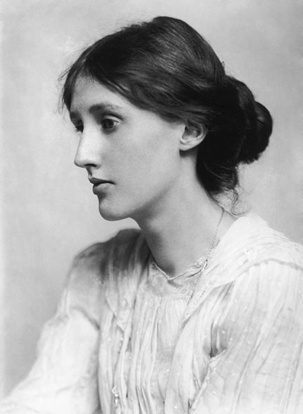
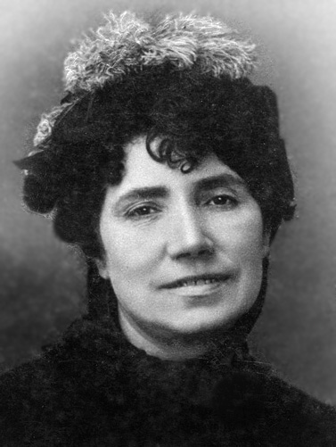
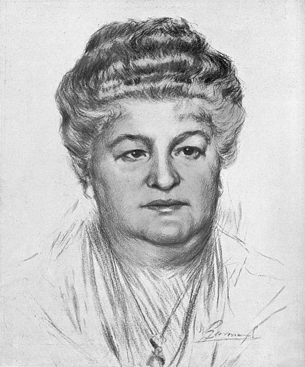
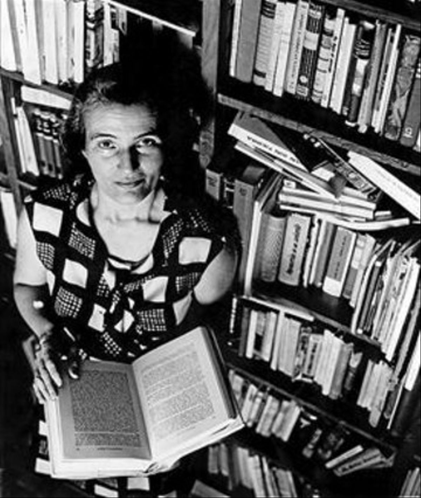
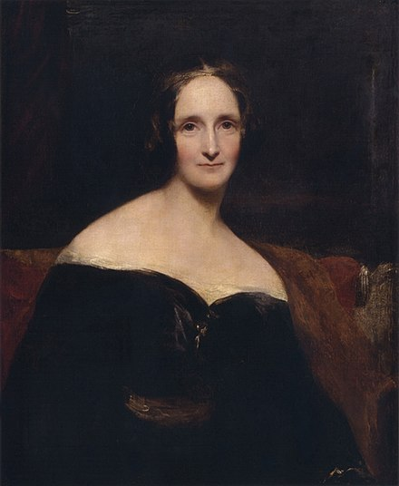
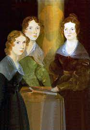
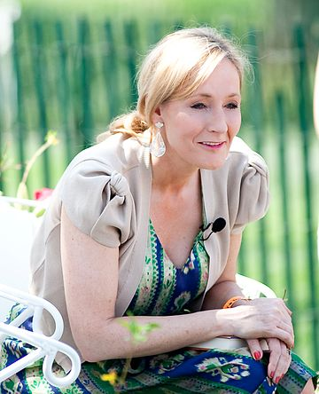
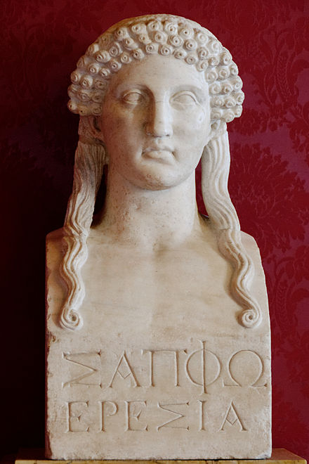
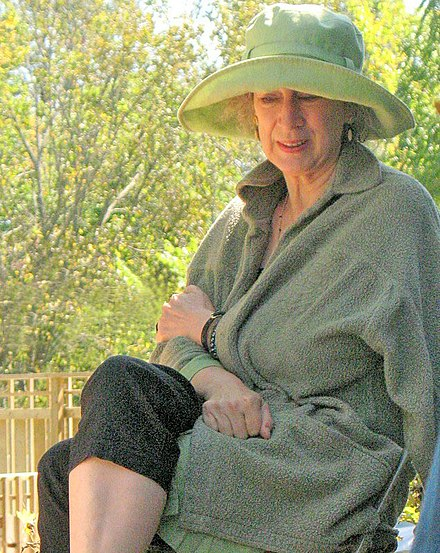

Escritoras
Adeline Virginia Stephen
1882-1941
Woolf comenzó a escribir profesionalmente en 1905, inicialmente para el Times Literary Supplement con una pieza de periodismo sobre Haworth, hogar de la familia Brontë. Su primera novela, Fin de viaje, fue publicada en 1915 por la editorial de su medio hermano, Gerald Duckworth and Company Ltd. En esta novela, como en Noche y día, la escritora ya se muestra dispuesta a romper los esquemas narrativos precedentes, pero apenas mereció consideración por parte de la crítica. Solo tras la publicación de La señora Dalloway y Al faro los críticos comenzaron a elogiar su originalidad literaria. En estas obras llaman ya la atención la maestría técnica y el afán experimental de la autora, quien introducía además en la prosa novelística un estilo y unas imágenes hasta entonces más propios de la poesía. Desaparecidas la acción y la intriga, sus narraciones se esfuerzan por captar la vida cambiante e inasible de la conciencia.
María Rosalía Rita de Castro
1837-1885
Fue una poetisa y novelista española que escribió tanto en gallego como en castellano. Considerada entre los grandes poetas de la literatura española del siglo xix,1 representa junto con Eduardo Pondal y Curros Enríquez una de las figuras emblemáticas del Rexurdimento gallego,2 no solo por su aportación literaria en general y por el hecho de que sus Cantares gallegos3 sean entendidos como la primera gran obra de la literatura gallega contemporánea, sino por el proceso de sacralización al que fue sometida y que acabó por convertirla en encarnación y símbolo del pueblo gallego.4 Además, es considerada junto con Gustavo Adolfo Bécquer, la precursora de la poesía española moderna.
Emilia Pardo-Bazán y de la Rúa-Figueroa
1851-1921
fue una noble y novelista, periodista, feminista, ensayista, crítica literaria, poetisa, dramaturga, traductora, editora, catedrática y conferenciante española introductora del naturalismo en España. Fue una precursora en sus ideas acerca de los derechos de las mujeres y el feminismo.1 Reivindicó la instrucción de las mujeres como algo fundamental y dedicó una parte importante de su actuación pública a defenderlo.2 Entre su obra literaria una de las más conocidas es la novela Los pazos de Ulloa (1886). Entre sus obras destacadas está La cuestión palpitante una recopilación de artículos que la acreditan como una de las principales impulsoras del naturalismo en España, movimiento que surge como reacción al romanticismo. También La Tribuna (1883), considerada la primera novela social y la primera novela naturalista española, donde incorpora por primera vez en la novela española al proletariado y da voz y discurso propio a una mujer trabajadora: Amparo, la cigarrera.3 Fue la primera mujer socia del Ateneo de Madrid, admitida el 9 de febrero de 1905.
Carmen Laforet Díaz
1921-2004
La producción literaria de la escritora no es muy amplia. La muerte de su madre y el casamiento de su padre con otra mujer que no era de su agrado, una "odiosa madrastra",5 tuvo reflejo en tres de sus obras, que tienen a huérfanos por protagonistas: Nada (1945), La isla y sus demonios (1952) y La insolación (1963). La literata española intentó aunar sentimientos contradictorios en cada una de sus obras. Varios autores insisten en su visión feminista, pero también tuvo una visión mística del mundo, sobre todo en su obra La mujer nueva, cuyo tema central es la fe de la protagonista, Paulina, una mujer que pasa de criticar a la Iglesia a practicar la religión católica, cambio que ella misma ha elegido. Paulina pasa de llevar una vida de pecado a juicio de la religión (tenía un hijo fuera de matrimonio y, además, mantenía otra relación con otro hombre) a la situación opuesta. De esta manera se aúnan en esta obra la independencia y libertad de la mujer para escoger su destino y el misticismo.
Mary Wollstonecraft Godwin
1797-1851
Fue una escritora dramaturga, ensayista y biógrafa británica reconocida principalmente por ser la autora de la novela gótica Frankenstein o el moderno Prometeo (1818), considerada la primera novela de ciencia ficción moderna y que logra inaugurar el género. También editó y promocionó las obras de su esposo, el poeta y filósofo romántico Percy Bysshe Shelley.
Hermanas Brontë
Con necesidades económicas que resolver, las hermanas decidieron publicar sus escritos para ver si lograban juntar algo de dinero. Escribieron un poemario en conjunto pero lo hicieron usando seudónimos masculinos; firmaron como Currer, Ellis y Acton Bell. Así se evitaban los prejuicios machistas propios de la época. Les fue bien en críticas pero mal en ventas, entonces decidieron publicar novelas por separado pero manteniendo sus identidades masculinas. A lo largo de 1846, las tres hermanas se dedicaron a escribir; Charlotte creó “Jane Eyre”; Emily, “Cumbres Borrascosas”, y Anne, “Agnes Grey”. En ese entonces Charlotte tenía 30 años, Emily 29 y Agnes 27.
En la época llamaron la atención por la intensidad de sus relatos donde los personajes femeninos no eran mujeres pasivas, sino personas inteligentes, complicadas y rebeldes. Emily no quiso volver a publicar, pero Charlotte y Anne continuaron una carrera de escritoras con obras que se adentraron en temas como la política y el feminismo.
Joanne Rowling
1965-Actualidad
Es una escritora, productora de cine y guionista británica, conocida por ser la autora de la serie de libros Harry Potter, que han superado los quinientos millones de ejemplares vendidos.
Este éxito literario supuso que la Sunday Times Rich List de 2008 estimase la fortuna de Rowling en 560 millones de libras, lo que la situó como la duodécima mujer más rica en el Reino Unido. Asimismo, Forbes ubicó a Rowling en el cuadragésimo puesto en su lista de las celebridades más poderosas de 2007,5 y la revista Time la seleccionó como «Personaje del Año» en el mismo año, resaltando la inspiración social, moral y política que les ha dado a los personajes de Harry Potter.
Rowling es una conocida filántropa que apoya instituciones de caridad como Comic Relief, One Parent Families y Multiple Sclerosis Society of Great Britain.
 Agatha Christie
Agatha Christie
1890-1976
Fue una escritora y dramaturga británica especializada en el género policial, por cuyo trabajo tuvo reconocimiento a nivel internacional. A lo largo de su carrera, publicó 66 novelas policiales, 6 novelas rosas y 14 historias cortas —bajo el pseudónimo de Mary Westmacott—, además de incursionar como autora teatral.
Safo de Mitilene
650/610 A.C. - 580 A.C.
Fue una poetisa griega de la época arcaica. Más tarde los comentaristas griegos la incluyeron en la lista de los «nueve poetas líricos». Platón la catalogó como "la décima Musa".
No existen muchos datos biográficos sobre ella, y solo se conocen algunos poemas y fragmentos extraídos de citas tardías (tradición indirecta) y de papiros. De hecho, prácticamente todo lo que se sabe de su vida se dedujo de sus poemas. El contenido amoroso de sus poemas propició toda clase de habladurías y rumores sobre su vida.
Margaret Atwood
1939-Actualidad
Es una poeta, novelista, crítica literaria, profesora y activista política canadiense. Es miembro del organismo de derechos humanos Amnistía Internacional y una de las personas que presiden BirdLife International, en defensa de las aves. En la actualidad divide su tiempo entre Toronto y Pelee Island, en Ontario.
Atwood ha escrito novelas de diferentes géneros, ensayos, relatos y libros de poemas.
También guiones para televisión, como The Servant Girl (1974) y ensayos como Days of the Rebels: 1815-1840 (1977).
Se la describe como una escritora feminista, ya que el tema del género está presente en algunas de sus obras de forma destacada. Se ha centrado en la identidad canadiense, en las relaciones de este país con Estados Unidos de América y Europa, en los derechos humanos, en asuntos ambientales, en los páramos canadienses, en los mitos sociales sobre la feminidad, en la representación del cuerpo de la mujer en el arte, la explotación social y económica de esta, así como las relaciones de mujeres entre sí y con los hombres.
En 1969 publicó La mujer comestible, donde se hizo eco de la marginación social de la mujer. En Procedures for Underground (1970) y The Journals of Susanna Moodie (1970), sus siguientes libros de poesía, los personajes tienen dificultades para aceptar lo irracional. Esta última quizá sea su obra poética más conocida; en ella, escribe desde el punto de vista de Susanna Moodie, una pionera de la colonización de la frontera canadiense del siglo XIX. Con la obra Power Politics (1971) usa las palabras como refugio para las mujeres débiles que se enfrentan a la fuerza masculina.
Como crítica literaria es muy conocida por su obra Survival: A Thematic Guide to Canadian Literature (1972), definida como el libro más asombroso escrito sobre literatura canadiense y que consiguió aumentar el interés en la literatura de este país.